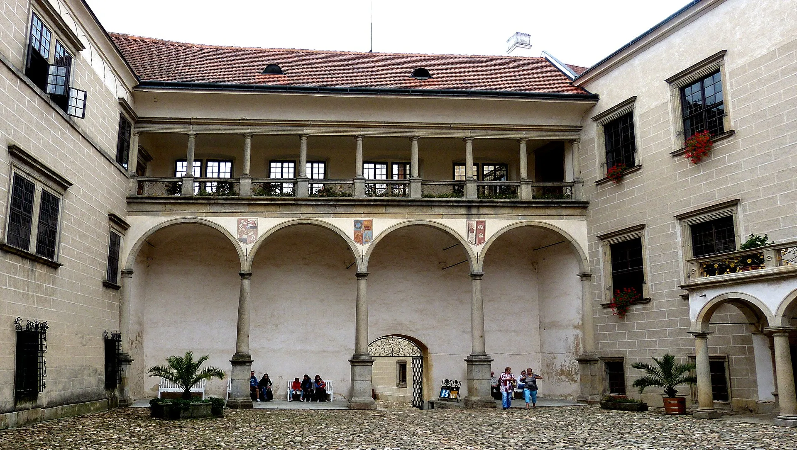

Tipy na výlety
Objevte krásy Telče a okolní přírody.
- Prohlídka zámku Telč
- Prohlídka Telčského podzemí
- Věž sv. Jakuba
- Výlety do přírody: Javořice, hrad Roštejn, vrch Čeřínek
- V dosahu: Historické město Slavonice, Jihlava (ZOO), Dačice
- Sport: Jízda na koni, tenis a cyklistika
- Aquapark v Dačicích
- Golgové hřiště u Telče (Šiškův mlýn)
